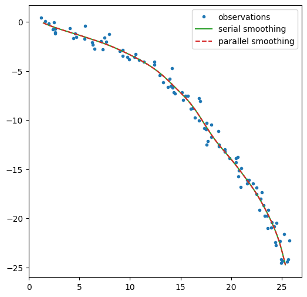
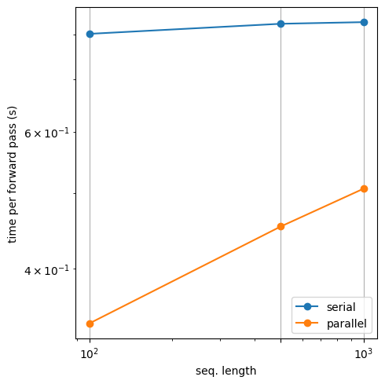

Parallel filtering and smoothing in an LG-SSM
Contents
Parallel filtering and smoothing in an LG-SSM#
This notebook shows how can reduce the cost of inference from O(T) to O(log T) time, if we have a GPU device.
This code borrows heavily from this example notebook from Adrien Correnflos. Some small changes have been made so it works with dynamax.
If you have a GPU, you should be able to get a speedup curve like this:

Setup#
Show code cell content
try:
import dynamax
except ModuleNotFoundError:
print('installing dynamax')
%pip install -qq git+https://github.com/probml/dynamax.git
import dynamax
from dynamax.linear_gaussian_ssm.inference import LGSSMParams, lgssm_filter, lgssm_smoother, lgssm_sample
from dynamax.linear_gaussian_ssm.parallel_inference import lgssm_filter as parallel_lgssm_filter
from dynamax.linear_gaussian_ssm.parallel_inference import lgssm_smoother as parallel_lgssm_smoother
import numpy as np
import jax
from jax import numpy as jnp
from jax import scipy as jsc
from jax import random as jr
from jax import vmap, tree_map, config, block_until_ready
from jax.lax import associative_scan
from matplotlib import pyplot as plt
print(jax.devices())
print(jax.devices()[0].platform)
if jax.devices()[0].platform == 'cpu':
cpu_mode = True
else:
cpu_mode = False
WARNING:absl:No GPU/TPU found, falling back to CPU. (Set TF_CPP_MIN_LOG_LEVEL=0 and rerun for more info.)
[CpuDevice(id=0)]
cpu
Model#
The model is a simple tracking model (see Example 3.6 in Bayesian Filtering and Smoothing (S. Särkkä, 2013).
dt = 0.1
F = jnp.eye(4) + dt * jnp.eye(4, k=2)
Q = 1. * jnp.kron(jnp.array([[dt**3/3, dt**2/2],
[dt**2/2, dt]]),
jnp.eye(2))
H = jnp.eye(2, 4)
R = 0.5 ** 2 * jnp.eye(2)
μ0 = jnp.array([0.,0.,1.,-1.])
Σ0 = jnp.eye(4)
latent_dim = 4
observation_dim = 2
input_dim = 1
lgssm_params = LGSSMParams(
initial_mean = μ0,
initial_covariance = Σ0,
dynamics_matrix = F,
dynamics_input_weights = jnp.zeros((latent_dim,input_dim)),
dynamics_bias = jnp.zeros(latent_dim),
dynamics_covariance = Q,
emission_matrix = H,
emission_input_weights = jnp.zeros((observation_dim, input_dim)),
emission_bias = jnp.zeros(observation_dim),
emission_covariance = R
)
Test parallel inference on a single sequence#
num_timesteps = 100
key = jr.PRNGKey(0)
inputs = jnp.zeros((num_timesteps,input_dim))
key, subkey = jr.split(key)
z,emissions = lgssm_sample(subkey,lgssm_params,num_timesteps, inputs)
ssm_posterior = lgssm_smoother(lgssm_params, emissions, inputs)
parallel_posterior = parallel_lgssm_smoother(lgssm_params, emissions)
print(parallel_posterior.filtered_means.shape)
print(parallel_posterior.filtered_covariances.shape)
(100, 4)
(100, 4, 4)
assert jnp.allclose(parallel_posterior.filtered_means, ssm_posterior.filtered_means, atol=1e-3)
assert jnp.allclose(parallel_posterior.filtered_covariances, ssm_posterior.filtered_covariances, atol=1e-3)
assert jnp.allclose(parallel_posterior.smoothed_means, ssm_posterior.smoothed_means, atol=1e-3)
assert jnp.allclose(parallel_posterior.smoothed_covariances, ssm_posterior.smoothed_covariances, atol=1e-3)
plt.figure(figsize=(6,6))
plt.plot(*emissions.T,'.', label="observations")
plt.plot(*ssm_posterior.filtered_means[:,:2].T, color="C2", label="serial filtering")
plt.plot(*parallel_posterior.filtered_means[:,:2].T, "--", color="C3",label="parallel filtering");
plt.legend();

plt.figure(figsize=(6,6))
plt.plot(*emissions.T,'.', label="observations")
plt.plot(*ssm_posterior.smoothed_means[:,:2].T, color="C2", label="serial smoothing")
plt.plot(*parallel_posterior.smoothed_means[:,:2].T, "--", color="C3",label="parallel smoothing")
plt.legend();

Timing comparison#
import time
key = jr.PRNGKey(0)
if cpu_mode:
Ts = [100, 500, 1000]
num_repeats = 1
else:
Ts = [100, 1_000, 10_000, 100_000]
num_repeats = 3
serial_smoothing_durations = []
parallel_smoothing_durations = []
compiled = False
for T in Ts:
inputs = jnp.zeros((T,input_dim))
key, subkey = jr.split(key)
z,emissions = lgssm_sample(subkey,lgssm_params,T, inputs)
if not compiled:
ssm_posterior = block_until_ready(lgssm_smoother(lgssm_params, emissions, inputs))
parallel_posterior = block_until_ready(parallel_lgssm_smoother(lgssm_params, emissions))
start = time.time()
for _ in range(num_repeats):
ssm_posterior = block_until_ready(lgssm_smoother(lgssm_params, emissions, inputs))
end = time.time()
mean_time = (end-start)/num_repeats
serial_smoothing_durations.append(mean_time)
print(f"Num timesteps={T}, \t time serial = {mean_time}")
start = time.time()
for _ in range(num_repeats):
parallel_posterior = block_until_ready(parallel_lgssm_smoother(lgssm_params, emissions))
end = time.time()
mean_time = (end-start)/num_repeats
parallel_smoothing_durations.append(mean_time)
print(f"Num timesteps={T}, \t time parallel = {mean_time}")
Num timesteps=100, time serial = 0.8015635013580322
Num timesteps=100, time parallel = 0.3399319648742676
Num timesteps=500, time serial = 0.8258702754974365
Num timesteps=500, time parallel = 0.45314764976501465
Num timesteps=1000, time serial = 0.8298749923706055
Num timesteps=1000, time parallel = 0.5066554546356201
plt.figure(figsize=(5, 5))
plt.loglog(Ts, serial_smoothing_durations, '-o', label='serial')
plt.loglog(Ts, parallel_smoothing_durations, '-o', label='parallel')
plt.xticks(Ts)
plt.xlabel("seq. length")
plt.ylabel("time per forward pass (s)")
plt.grid(True)
plt.legend()
plt.tight_layout()
